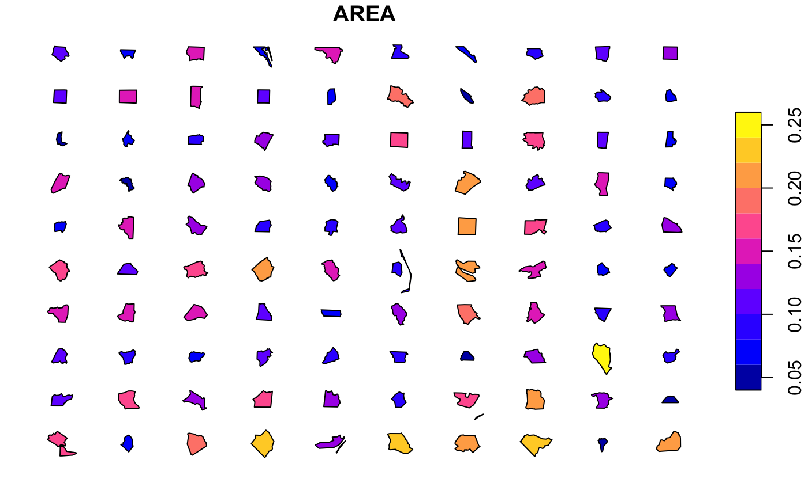

This R-package is designed to facilitate the construction of infographics which place spatial features side-by-side, for example to compare visually the dimensions of cities, study regions or building sizes in two dimensional space. The package aims to preserve the accurate or recognisable shapes (and by default, the dimensions) of the features to make them recognisable but transpose their spatial position so that they are distributed visually. When spatial dimensions are preserved, further spatial analysis (e.g. area calculations) or the additional of scale bars can be accurately plotted.
Functions rely on sf objects as inputs and outputs, hence the primary dependency of this package is sf. The use of sf objects provides maximum flexibility for ultimate graphics output; users can use base graphics or alternatives such as ggplot according to need or preference with the resulting reprojected and translated sf features.
Although theoretically any sf-compatible spatial features can be processed with this package, the most likely application is the orientation of polygons in a way that their relative size can be easily compared.
The original use-case was the visualization of the relative size of scientific study regions of different archaeological surveys and the relative size of ancient cities.

Sample of compared polygons from the sf nc data-set
Installation
This package relies on the sf package for calculating geometries and handling spatial data. Depending on the platform you are using, you may need to install GDAL and other dependencies before using sf and spatialcompare. Read the sf documentation for more information: see sf README on GitHub.
You can install the current development version of spatialcompare from GitHub with:
# install.packages("devtools")
devtools::install_github("tcwilkinson/spatialcompare")Basic Example
- Aligning, distributing and plotting North Carolina districts as a grid
This example shows you how to align, distribute and then plot a set of simple (spatial) features using data distributed with the sf package:
library(sf)
#> Linking to GEOS 3.6.1, GDAL 2.1.3, PROJ 4.9.3
library(spatialcompare)
# load polygon data from the sf package
nc <- sf::st_read(system.file("shape/nc.shp", package="sf"))
#> Reading layer `nc' from data source `/Library/Frameworks/R.framework/Versions/3.5/Resources/library/sf/shape/nc.shp' using driver `ESRI Shapefile'
#> Simple feature collection with 100 features and 14 fields
#> geometry type: MULTIPOLYGON
#> dimension: XY
#> bbox: xmin: -84.32385 ymin: 33.88199 xmax: -75.45698 ymax: 36.58965
#> epsg (SRID): 4267
#> proj4string: +proj=longlat +datum=NAD27 +no_defs
# align polygons around origin
nc_aligned <- align(nc,by.feature=T)
# distribute polygons into regular grid
nc_distributed <- distribute(nc_aligned, margin=1, x.mar=2)
# plot resulting distributed features
# optional: select first parameter, this is just for clarity of the final plot
nc_d <- nc_distributed[1] # AREA
plot(nc_d)
For more information on how to get started, read the introduction vignette for guidance on how to get started using this package:
browseVignettes("spatialcompare")Or browse the documentation and vignette online: https://tcwilkinson.github.io/spatialcompare/
Improvements and Contributions
For ideas and plans on how to improve this package in the future, see the TODO.md file.
Pull requests on this package which improve the documentation and methods are welcome.
- Author: Toby C. Wilkinson
- Date of this README: 2019-05-05